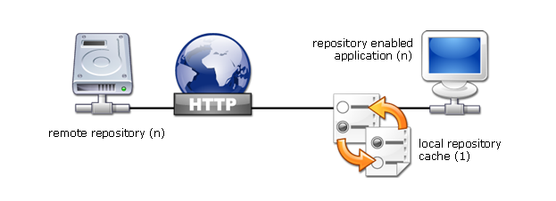

The transit package contains the primary runtime classes within the Transit resource management system.

The principal Transit class is responsible for the establishment of the Transit runtime based on a default or explicit TransitModel. The Transit class provides the internal machinery for a protocol handler dealing with the "artifact" and "link" uri schemes and the corresponding url protocols. In addition Transit provides access to classloader construction services via the following static operation:
Repository Transit.getInstance().getRepository();